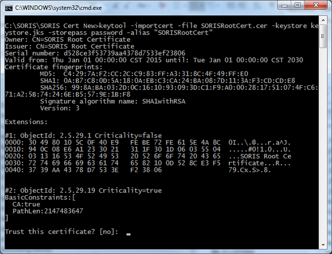
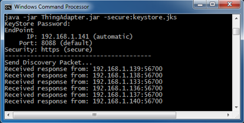

Configure a Java Adapter with HTTPS and WSS
To configure a Java Adapter with HTTPS and WSS, complete the procedures in the following sections:
Create a Self-Signed KeyStore
- You have located the keytool.exe in Program Files\Java\jre[version]\bin.
- To create a self-signed Java Keystore, run the following command line:
keytool -genkey -keyalg RSA -alias selfsigned -keystore keystore.jks
-storepass password -validity 360 -keysize 2048 -ext SAN=DNS:localhost,IP:192.168.x.xxx -validity 9999
NOTE: You must use the IP address of the computer running the SORIS Adapter.
Use a Certificate from a Certificate Authority
You can also use a CA certificate issued by a certificate authority instead of creating a self-signed keystore. A JKS (java keystore) file can be created from a PFX file by doing the following:
- Open a command prompt.
- Navigate to the directory were the PFX file is located.
- Enter the following:
>> openssl pkcs12 -in <cert_file_name>.pfx -out mypemfile.pemNOTE: Desigo CC is not able to validate a CA server certificate from a certificate authority. If the Validate Server Certificate with CA check box is selected and this situation occurs, the communication data will be encrypted, but the connection will be rejected. Therefore, if the Java Adapter uses a CA server certificate, make sure that you do not select the Validate Server Certificate with CA check box when adding a SORIS Adapter.
>> openssl pkcs12 -export -in mypemfile.pem -out mykeystore.p12
>> keytool -importkeystore -srckeystore mykeystore.p12
–destkeystore KeyStore.jks -srcstoretype pkcs12 -deststoretype JKS
(Optional) Add a Client Certificate to the KeyStore
When the Java Adapter is started in Secure mode (-secure) with the Client Certificate Authentication option (-clientauth) turned on, the public key (CER file) of the certificate used by the client must be trusted for a connection to be made. Follow the steps below to add trusted certificates to the KeyStore.
- You have located the keytool.exe in Program Files\Java\jre[version]\bin.
- You have created the KeyStore in the Creating a KeyStore section.
- You have a client certificate.
- The KeyStore and the client certificate public key are in the same directory.
- Open a command line, and then navigate to the directory containing the KeyStore.
- Run the following command line to add the client certificate public key (CER file) to the KeyStore:
keytool -importcert -file SORISClientCert.cer -keystore keystore.jks -storepass <password> -alias "SORISClientCert" - When prompted to Trust this Certificate?, type Y, and then click Enter.

- Repeat Steps 2 and 3 to add all required client certificates to the KeyStore.
Start the Java Adapter in Secure Mode
- Copy the created file, keystore.jks, to the same directory location as the SORIS Adapter jar file.
- Start Java SORIS Adapter in secure mode by doing one of the following:
- To use SSL/TLS security, run the Adapter with the Secure option:
-secure:<keystore_name>
Example:java -jar ThingAdapter.jar -secure:keystore.jks - To add more security, also add the ClientAuth option to require client authentication:
-secure:<keystore_name> -clientauth
Example:java -jar ThingAdapter.jar -secure:keystore.jks -clientauth - The Adapter starts.
- Enter a password.
- The password is verified, encrypted, and stored in a file named ProgData in the root directory. This eliminates the need to re-enter the password the next time the Adapter starts in secure mode.
